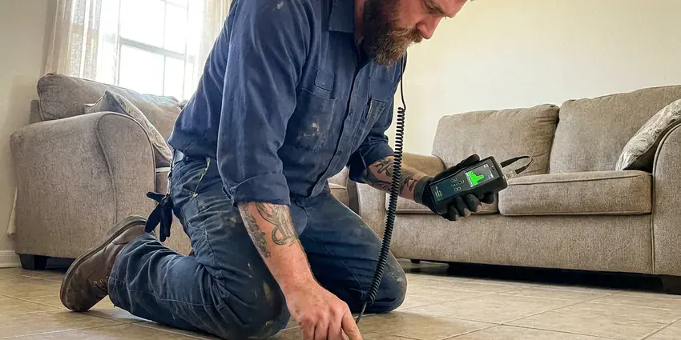

Commercial Plumbing in Ogden, UT
Licensed commercial plumbing for Utah property owners, facility staff and store managers in Ogden, UT.
- Certified Backflow Testers
- After-Hours Work
- Serving Utah Businesses
- Weekend Scheduling

Restroom Down in Ogden, UT? Call Us Now.
Call (385) 543-4073 for emergency service or a maintenance quote.
Steady Plumbing Service for Ogden, UT Businesses
BPK Plumbing keeps a written record of every commercial visit, with photos, test results and the part numbers we installed. Facility managers like that. An inspector asking about last year's backflow test gets the report the same day, not after a week of searching. The history also points out which fixtures fail over and over.
Some of what we do:
- Annual backflow testing with utility reporting
- Grease interceptor service and kitchen line scouring
- Tankless rack and boiler-fed water heater service

Additional Plumbing Maintenance Services in Ogden, UT
Our maintenance and specialty plumbing services in Ogden, UT protect your home year-round and extend the life of every system.


Customers
Why Choose BPK Plumbing for Commercial Plumbing in Ogden, UT?
A commercial plumber has to know the building, not just the pipe. Fixture counts, occupancy and business hours drive every sizing call we make. Guessing costs money. An undersized interceptor fills in a few weeks, and an oversized water heater burns gas for no reason all year long.
- Camera Diagnostics, Every recurring drain problem gets a camera before a quote, so you pay for the actual fix.
- Commercial Equipment, We bring high-pressure jetters and sewer cameras that reach long commercial laterals and 6-inch building drains.
- Nights and Weekends, Pipes break on Saturdays too. We answer commercial emergency calls any hour and schedule planned work outside your business hours.
Citywide Coverage
Our commercial plumbers cover every business district in Ogden, from downtown storefronts to the industrial parks on the edge of town. Every truck is stocked for commercial work. Flush valve kits, large-diameter fittings and backflow gauges ride on every truck, so the address rarely changes how fast we finish.
Experienced Team
Every technician at BPK Plumbing has worked in restaurants, clinics and apartment buildings. They understand health codes and tenant concerns. More to the point, they know how to work in an occupied building, keep a clean work area and talk to your staff without slowing down the people who keep the business running.
Safety-First Approach
All commercial plumbing work in Ogden, UT gets done to the current plumbing and health codes. Venting is never skipped. Grease interceptors get sized properly, backflow devices get installed where the code requires them and water heaters get proper T and P discharge piping.
Trusted Certified Ogden Plumbing Services Professionals
At BPK Plumbing, we take pride in licensed, certified plumbing services throughout Ogden, UT. Those papers on the wall mean something. Every repair, install and maintenance visit follows strict safety and quality rules, and the plumbers doing the work carry recognized industry credentials.
Call Us Now PHCC Plumbing Contractor Recognition
PHCC Plumbing Contractor Recognition Better Business Bureau (BBB) Accreditation
Better Business Bureau (BBB) Accreditation Angi Certified Pro
Angi Certified Pro ISO 9001 Quality Management Certification
ISO 9001 Quality Management CertificationWhat Our Commercial Plumbers Do in Ogden, UT
Commercial Drain Cleaning and Hydro-Jetting in Ogden
Commercial drains carry grease, paper towels and food waste in volumes no house ever sees. A cable just pokes a hole. Our jetters push water at 3,000 to 4,000 psi through a spinning nozzle that scours the full pipe wall, which clears 4-inch and 6-inch lines back to bare pipe. A jetted line stays open far longer than a cabled one. Restaurants, schools and apartment stacks are where we see the biggest difference.

Commercial Pipe Repair and Repiping in Ogden, UT
Older commercial buildings often have galvanized supply lines that are rusted nearly shut, or copper that has pinholed along hot water runs. Patching works for a while. Once leaks start showing up in different spots every few months, a sectional repipe in Type L copper or commercial-grade PEX usually costs less than the next three emergency calls. The first step is mapping the risers and branches. Work gets phased by floor or suite so tenants keep their water most of the day.
Backflow Assembly Testing and Rebuilds in Ogden
Most water providers require annual tests on commercial backflow assemblies, and many send late notices that come with fines. Test early. We test reduced pressure zone, double check and pressure vacuum breaker assemblies with gauges calibrated every year and submit the results online or on paper, whichever your provider uses. If a device fails, we usually rebuild it the same day.
Commercial Water Heaters and Boilers in Ogden, UT
Gyms, commercial kitchens and apartment buildings burn through hot water in short, heavy peaks. We install and service high-input tank heaters, tankless racks and boiler-fed indirect systems with storage tanks. Utah water is among the hardest in the country in many areas, and scale builds up quickly in water heaters, faucets and appliances. Scale cuts output fast. We set up a flushing and descaling schedule, and we install thermostatic mixing valves so hand sinks deliver tempered water without scalding anyone.
Commercial Water Heater Service in Ogden, UT
Big tank heaters fail in a few common ways: a failed gas valve, a cracked flue baffle, a stuck T and P valve or a tank full of scale. Each sounds different. We check draft and combustion, test water temperature at the far end of the building and flush the tank, then tell you whether repair or replacement makes more sense. Tankless units get a descaling flush. Recirculation pumps on long runs get tested as part of the visit.
Sewer Camera Inspection for Businesses in Ogden
A camera inspection shows the inside of a drain line on a monitor and records it so you can share it with a landlord or contractor. Guesswork goes away. The camera goes in at a cleanout, we note distances to every defect and then locate each one from the surface with a receiver. You get the video file. That record makes capital planning far easier when the board asks why the sewer needs money.
Commercial Sewer Line Repair in Ogden, UT
The building sewer on a commercial property carries everything from every tenant, so a root intrusion or a belly in the line affects the whole property. First we run a camera and locate the damage depth, then we compare a spot dig, a cured-in-place liner and pipe bursting. Trenchless saves parking lots. Many 6-inch laterals can be lined in a single day without cutting the parking lot or closing a door.

After-Hours Commercial Plumbing in Ogden
Emergencies at a business cost more the longer they last, so speed matters more than the hourly rate. Water on the floor comes first. The first visit stops the water and gets fixtures working again, and bigger repairs get scheduled when they will not cost overtime or interrupt business. Burst pipes, sewage backups and dead water heaters all qualify.
Commercial Plumbing Near Me in Ogden, UT
Our crews know the water providers, inspectors and code rules for Ogden businesses. That keeps your property compliant. Tests are filed on time, permits are pulled when required and every report goes into one file for you.
Local plumbers know which inspectors, water providers and pretreatment programs cover Ogden businesses. That knowledge saves you a failed inspection. Backflow reports go out in your provider's format, and interceptor logs stay ready for the pretreatment inspector who visits local kitchens.
BPK Plumbing at a Glance
- Fully licensed plumbing team covering Ogden, UT
- Same-day appointments and 24/7 emergency response
- Clear written estimates, no hidden fees
- 4.8-star rated by 470+ Utah customers
Ogden Map
Ogden Information
- Population
- 87,267
- Area codes
- 801/385/435
- Service area
- Ogden and towns within a 40 mile drive
- Nearby
- Layton, Salt Lake City, Logan, West Valley City
Annual backflow tests and grease rules keep business plumbing in Ogden, UT on a calendar. Utah water is among the most mineral-heavy in the country in many areas, and scale builds up quickly in water heaters, faucets and appliances.
Talk to a Plumber
Reach out to BPK Plumbing for reliable plumbing work done by licensed pros in Ogden, UT.
Our Specialized Plumbing Services in Ogden, UT
At BPK Plumbing, you get every kind of plumbing service from one company across Ogden, UT. From leak detection to full system installs, our team works fast and charges fair prices on homes and commercial properties alike. Take a look at our core services below:


The Commercial Service Process in Ogden, UT
Here is what a commercial service call with BPK Plumbing in Ogden, UT looks like, step by step.
Schedule the Visit
Call (385) 543-4073 and tell us about the property. We book a plumber or estimator at a time that fits your operation.
Assess and Propose
We inspect the system, explain the options and put the price in writing. Work starts only after you approve it.
Complete and Document
We finish the work, test it and send invoices, photos and compliance reports for your records.
Frequently Asked Questions About Commercial Plumbing in Ogden
Small commercial repairs often run $200 to $600, with larger projects quoted on site. Backflow tests usually cost $75 to $175 per device.
Many restaurants need service every one to three months, depending on volume. Your pretreatment program may set a required interval, and we can keep you on it.
Put the routine work on a calendar. Yearly backflow tests, regular jetting and heater flushes stop most emergencies before they start. Staff training helps too. Strainers in sinks, signs about wipes and a firm rule on fryer oil make a big difference in keeping commercial lines clear.
Maintenance staff can swap a toilet seat. Backflow devices, gas lines, water heaters and anything that needs a permit should go to a licensed plumber. Mistakes on that kind of work can fail inspection, complicate an insurance claim or put the water supply at risk.
Repairs and installations come with a written parts and labor warranty. The terms are listed on your invoice. Our technician will go over the details for your specific job before leaving, including what the manufacturer covers on any new equipment.
Yes. We service grease interceptors, sewage ejector pumps, booster pumps, backflow assemblies and commercial water filtration.
Yes, commercial repairs and installs include a written warranty on parts and labor. New equipment also carries its factory warranty.
Scheduled maintenance does most of the work. Keep jetting, testing and flushing on a fixed schedule. Strainers cost almost nothing. Getting kitchen staff to scrape plates and keep fryer oil out of drains cuts grease buildup more than any additive.
What People Are Saying About Our Plumbing Experts?

Jessica T.
We were adding a gas range in a kitchen remodel and needed a new line run from the meter. The plumber pulled the permit, ran the pipe through the crawl space, and had it inspected and approved within the week.
Gas Line Repair · Salt Lake City, UT
Megan L.
Our upstairs tub drained so slowly that every shower turned into a bath. BPK Plumbing pulled a wad of hair out of the stopper and then snaked the line past the trap. Three months later it still drains fast.
Drain Cleaning · Salt Lake City, UT
Angela D.
Our sump pump quit during a storm and the water was an inch from the basement carpet. BPK Plumbing put in a new pump with a battery backup that same evening. We have had two heavy rains since. It kicked on both times.
Sump Pump · West Valley City, UT
Paul B.
Our pit pump ran nonstop even in dry weather. The plumber found the check valve was stuck open, so the same water kept cycling back into the pit. New valve, new float switch, done in an hour. It runs quiet now.
Sump Pump · Ogden, UTKaren W.
After our third pinhole leak in copper, we stopped patching. BPK Plumbing gave us a written plan room by room and repiped the house in PEX while we stayed in it. The crew covered our floors every morning and cleaned up every night.
Repiping · Millcreek, UT
Nathan E.
Our tankless heater kept throwing an error code and shutting off mid shower. The tech flushed the heat exchanger, which was full of scale, and replaced a bad flow sensor. Hot water has been steady for half a year now.
Water Heater Repair · Layton, UT